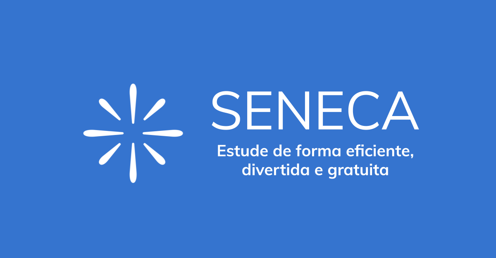

- Área do Aluno
- Área do Professor
- Fale com Professor
Bem vindo ao site
Bem-vindo(a) ao nosso site de estudos! Aqui você encontrará um ambiente virtual criado especialmente para
ajudar você a alcançar seus objetivos acadêmicos.
Nosso site é uma plataforma de aprendizado interativa que oferece uma ampla variedade de aulas e
recursos educacionais para estudantes de todas as idades e níveis de habilidade. Se você está procurando
aprimorar suas habilidades em um assunto específico, se preparar para um exame importante ou
simplesmente expandir seu conhecimento em geral, nosso site tem tudo o que você precisa.
Este site foi programado por alunos do CSC e foi projetado para ser flexível e
adaptável, conforme as necessidades de cada aluno. Você pode estudar no seu próprio ritmo, de acordo com
sua
agenda e em qualquer lugar que seja conveniente para você.
Nosso site também oferece uma ampla variedade de recursos gratuitos, como livros
digitais, jogos e vídeos educacionais, para ajudar você a aprender de forma simples e complementar
seus estudos.
Esperamos que você aproveite ao máximo tudo o que nosso site tem a oferecer e desejamos a vocês uma
jornada
de aprendizado bem-sucedida e gratificante!
Área do Aluno
Nessa parte do site, você vai poder encontrar conteúdos relacionados a estudos em decorrência a alunos, onde terá indicações de vídeos aulas (pelo Youtube ou em Sites), jogos que você pode treinar o quanto você sabe de conteúdo e quiz prontos em sites bem conhecidos, onde tem perguntas ou até mesmo o conteúdo em si para lhe ajudar a responder.Video Aula
Escolher as videoaulas para aprofundar os estudos é a mobilidade. Você só precisa de um computador, tablet ou mesmo um celular conectado à internet. Então, todo o conteúdo estará disponível para você. Dessa forma, dá para estudar em qualquer lugar. Pode ser na praça, no ônibus, no parque ou no silêncio do seu quarto. Se estiver cansado da rotina, dá para simplesmente pegar o seu celular e escolher qualquer região da cidade para rever o conteúdo. É muito simples e prático.
Exemplos de site com aulas gratuitas
Khan Academy : Este site oferece uma grande
variedade de
videoaulas gratuitas em matemática, ciências, história, economia e outras disciplinas. As videoaulas são
projetadas para alunos de todas as idades e níveis de habilidade, e são ministradas por professores
experientes e qualificados.

Seneca : É uma plataforma online de
aprendizagem que
oferece cursos gratuitos em uma ampla variedade de tópicos, incluindo matemática, ciência, línguas e
história. A plataforma é projetada para alunos de todas as idades e níveis de habilidade, e oferece conteúdo
educacional em um formato interativo e envolvente.

Exemplos de canais de estudos no youtube
Descomplica : É um popular canal educacional brasileiro no YouTube, com foco em oferecer aulas e conteúdo de revisão para estudantes do ensino médio e pré-vestibular. O canal aborda principalmente disciplinas como matemática, física, química, biologia, história, geografia, entre outras. Além disso, no próprio canal existe um quadro chamado "Quer que desenhe ?" onde tem vários assuntos com mapa mental para ajudar a resumir o conteúdo.Toda Matéria : É um canal educacional brasileiro no YouTube, com foco em oferecer aulas e conteúdo de revisão para estudantes do fundamental até ensino médio. O canal aborda disciplinas de todas as matérias.
Exercícios
Fazer questões é uma estratégia eficaz para ajudar nos estudos de várias maneiras entre alguns beneficios temos: Reforçando o conhecimento, ao responder questões, você está testando seu entendimento e consolidando o que aprendeu; Aprimorando sua capacidade de raciocínio, resolver questões requer análise, raciocínio e aplicação do conhecimento; Prepara para avaliações: Fazer questões é uma maneira eficiente de se preparar para provas e exames, pois simula o tipo de perguntas que você pode encontrar e entre outros.Exemplos de sites com exercicios para estudos
Brasil Escola : É um portal que disponibiliza materiais didáticos, como artigos, resumos, exercícios, videoaulas e simulados, com o objetivo de auxiliar estudantes de todos os níveis de ensino, desde o fundamental até o ensino médio, além de vestibulandos e candidatos a concursos públicos.Mundo Educação : Os exercícios do Mundo Educação são uma ferramenta útil para os alunos se prepararem para provas e avaliações, além de contribuírem para o desenvolvimento do pensamento crítico, da resolução de problemas e da assimilação dos conteúdos escolares. É importante ressaltar que o acesso ao conteúdo e aos exercícios do Mundo Educação geralmente é gratuito, embora possa haver algumas funcionalidades ou materiais exclusivos disponíveis para assinantes ou usuários cadastrados.